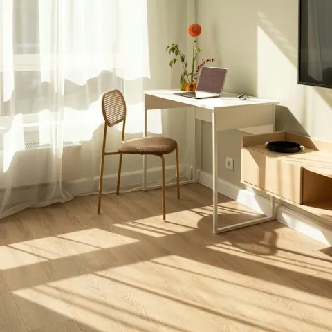
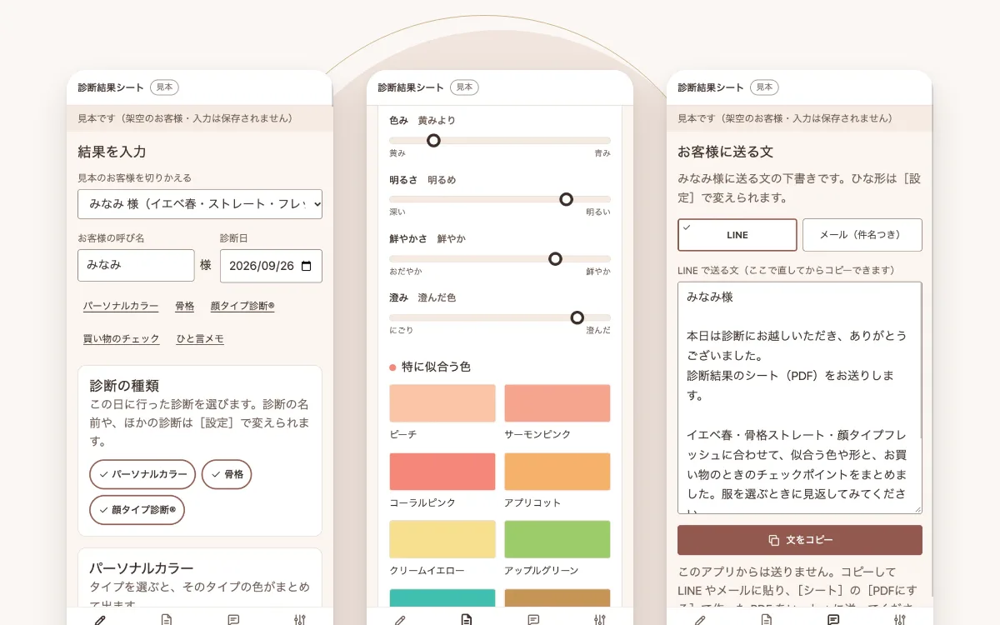
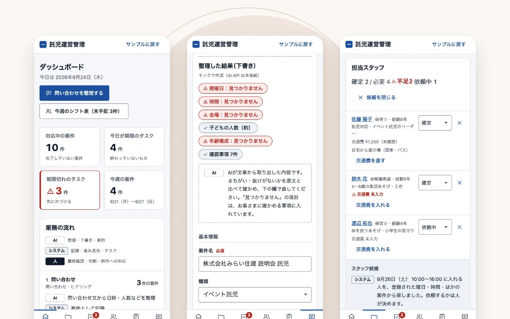

女性経営者・個人事業主のためのAI活用サポート
AIで、仕事を
もっと軽やかに。
業務整理 × AI × 自動化で、
あなたの「本当にやりたい仕事」の時間をつくります。
01Concerns
こんなこと、ありませんか？
予約・お問い合わせ・請求の管理が、ノートや表計算にばらばらになっている
メールの返信や事務作業に追われて、本業の時間が足りない
記事や動画での発信を続けたいのに、書く時間がとれない
AIが気になるけれど、何から始めればいいかわからない
その「確認・まとめ・報告」、仕組みにできます。
毎日くり返している作業を整理して、AIと自動化に任せられる形にします。

02Concept
大切にしていること
IT現場で、たくさんの「確認・まとめ・報告」を回してきた経験から、続けられる仕組みをいっしょにつくります。
IT現場で身につけた「整理する力」
進捗・品質管理の実務経験をもとに、毎日のお仕事を無理なく続けられる形に整えます。
納品後も、ご自身で使い続けられる
手順書と定着支援で、納品後もご自身だけで運用できる状態までお手伝いします。
最短2週間で、使い始められる
各段階で確認をはさみ、手戻りを抑えて短期間で立ち上げます。
03Portfolio
ポートフォリオ
AIや仕組みを活用して、実際に「使える形」まで作った事例をご紹介します。

診断のあとに送る結果シートの作成アプリ
パーソナルカラーや骨格などの診断のあと、結果を選んで入力するだけで、お客様用の結果シートと送る文の下書きができるWebアプリです。シートはスマホで見やすく、PDFにも保存できます。ポートフォリオ用の架空の案件で、画面は架空のデータで表示しています。
- 使用技術
- HTML・CSS・JavaScript
- 担当
- 企画・設計・開発・テスト
- 納品物
- Webアプリ一式（動作確認の記録つき）

イベント託児の運営管理システム
問い合わせ・申込・スタッフの手配・常設託児室のシフト・実績・請求の準備までを、1つの流れで管理する業務Webアプリです。AIは整理と下書き、最終確認と判断は人が行う役割分担にしています。ポートフォリオ用の架空の案件で、画面は架空のデータで表示しています。
- 使用技術
- 画面: HTML・CSS・JavaScript／サーバー: Java／データベース: PostgreSQL／AI: Claude API
- 担当
- 企画・設計・開発
- 納品物
- Webアプリ一式・使い方マニュアル（PDF）（設計書・動作確認の記録つき）
04Process
ご依頼の流れ
お問い合わせから最短2週間で納品いたします。各工程で確認をはさみ、手戻りを防ぎます。
- STEP01
ヒアリング
現状の業務と課題を、30分のオンライン面談で伺います。
- STEP02
設計・お見積り
対象範囲と完成イメージを整理し、費用と期間をご提示します。
- STEP03
制作
中間段階で動作をご確認いただき、方向性をすり合わせます。
- STEP04
納品・定着支援
運用手順書をお渡しし、納品後2週間はご質問に対応します。
05FAQ
よくある質問
はじめての方からよくいただくご質問です。ほかにも気になることがあれば、お気軽にお問い合わせください。
パソコンやAIにくわしくなくても大丈夫ですか？
大丈夫です。専門用語はできるだけ使わずにご説明し、使い方の手順書もお渡しします。
相談だけでも費用はかかりますか？
ご相談・お見積りは無料です。30分のオンライン面談で、いまのお仕事の様子を伺います。
どのくらいで使えるようになりますか？
内容によって変わりますが、最短2週間で納品いたします。期間はお見積りのときにご提示します。
納品したあとも相談できますか？
運用手順書をお渡しし、納品後2週間はご質問に対応します。
遠方に住んでいても依頼できますか？
オンラインで全国からのご依頼に対応しています。
06About
IT現場の業務管理から生まれた、
再現できる仕組みづくり。
ITプロジェクトの進捗管理・品質管理の現場では、「確認・とりまとめ・報告」に多くの時間が費やされています。その時間をAIと自動化で仕組みに置き換え、誰でも再現できる形でご提供しています。
概要
- 事業内容
- 業務テンプレート設計／AIツール導入支援・研修／コンテンツ制作
- 対応領域
- 定型業務の標準化、報告・議事録の自動化、社内の知識・手順の整理（ナレッジ管理）
- 使用ツール
- Claude Code、Notion、Google Workspace、Canva ほか
- 対応形式
- オンライン（全国対応）
- 所在地
- 東京都
07Contact
業務の仕組み化について、
お気軽にご相談ください。
ご相談・お見積りは無料です。内容を確認のうえ、2営業日以内にご返信いたします。